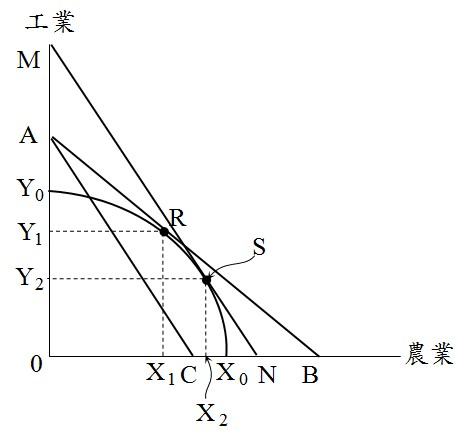
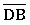

農工爭地
• 一、農工爭地之意義
發展工業需要工業用地，生產糧食需要農業用地。但台灣之土地資源畢竟有限，如何妥善規劃用地需求，以維持工業發展與農業生產之均衡。
• 二、考慮外部性之用地需求
如圖(一)所示，台灣土地如果全部用於農業生產，農業產量X0；如果全部用於工業生產，工業產量Y0。設農業平均價格P0，工業平均價格[圖片1]，則等收益線[圖片2]。生產可能曲線X0Y0弧線與等收益線[圖片3]之相切，切點R，決定農業產量X1，工業產量Y1。
[圖片4]
圖(一) 農業產量與工業產量之最適組合
• (一) 考慮農業生產外部利益：農業之多功能性，農業生產具有外部利益，因此對農業之評價由P0上升為P1。如圖(二)所示，等收益線由[圖片5]移至[圖片6]。將[圖片7]平行外移至[圖片8]，且與生產可能曲線相切，切點S。此時，農業產量由X1增加至X2，工業產量由Y1減少至Y2。總之，考慮農業之外部利益，增加農業用地，以增加農業產量；減少工業用地，以減少工業產量。
[圖片9]
圖(二) 考慮農業外部利益之產量變化
• (二) 考慮工業生產之外部成本：工業造成環境污染，工業生產具有外部成本，因此對工業之評價由[圖片10]下降為[圖片11]。如圖(三)所示，等收益線由[圖片12]移至[圖片13]。將[圖片14]平行內移至[圖片15]，且與生產可能曲線相切，切點T。此時，農業產量由X1增加至X3，工業產量由Y1減少至Y3。總之，考慮工業之外部成本，增加農業用地，以增加農業產量；減少工業用地，以減少工業產量。
[圖片16]
圖(三) 考慮工業外部成本之產量變化
這篇文章考過哪些題目
讀完試著自己作答，再點進去對答案。依文字相似度自動比對，不一定完全對應。
- 101 高考《土地經濟學》第 3 題
依照過去的觀念和經驗，我國經常以工業用地的產值較高，而將產值較低的農（耕）地徵收變更為工業用地。但是，近年來在農業體制上… - 101 地特三等《土地經濟學》第 3 題
假設採用土地和資本兩種同質的生產要素，興建不同樓高的建築物，則土地使用量和建築物樓層的最適組合如何決定？又地價不變，建築… - 100 高考《土地經濟學》第 2 題
最近，在農業上經常提到多功能農業（multifunctional agriculture），它是一個聯合生產（joint… - 104 地特三等《土地經濟學》第 1 題
都市土地因價格較為高昂，往往呈現集約利用的現象。倘若採用土地和資本兩種同質的生產要素，興建不同樓地板面積的建築物，則這兩… - 103 地特三等《土地經濟學》第 3 題
近年來，經濟暨合作發展組織（OECD ）指出農業多功能性（Multifunctionality ofagricultur… - 108 地特三等《土地經濟學》第 2 題
政府實施土地使用管制多年，何以違規工廠仍向農業用地入侵？又這樣的結果將對農業生產環境滋生何種不良影響？試繪圖加以解析。再… - 102 地特三等《土地經濟學》第 2 題
試繪圖說明地價高低與土地利用的關係。（25分） - 109 地特三等《土地經濟學》第 3 題
政府近年推動綠能政策，有些農民將農地出租設置太陽能板，獲得的租金往往遠高於做為農業生產的收益。請問太陽能板的設置，可能對…
文章圖片




